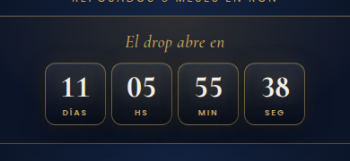

Todo lo que hay que hacer, quién lo hace y en qué orden: landing, Shopify, planilla, ManyChat, email, WhatsApp, contenido y anuncios. Paso a paso, sin vueltas.

Leelo una vez entero. Después usalo como lista: cada tarea tiene un responsable, una fecha y los pasos exactos. Si una tarea no tiene dueño, no se hace.
| Qué | Detalle |
|---|---|
| Producto | Bicapa Edición Especial · Reposado en Ron. Dos capas de distinto color elegidas hoja por hoja, 6 meses de reposo en ron. 100 unidades, cada unidad es 1 puro. |
| Antes del domingo 18/10 | La landing muestra el video (VSL), la cuenta regresiva y el formulario "Anotate". No se puede comprar. |
| Desde el domingo 18/10, 00:00 hs | La landing pasa sola a "Venta abierta" (si el producto está activo, con precio y stock). No cierra por tiempo: queda abierta hasta que el stock llega a 0. |
| Cuando se agota | La landing pasa sola a "Edición cerrada" y ofrece anotarse al próximo drop. |
| Dónde se guardan los datos | Shopify (clientes con etiqueta drop-bicapa) + planilla de Google con leads completos, parciales y visitas. |
| Canales | Orgánico de Instagram + ManyChat para captar · Email y WhatsApp para avisar · Landing para anotarse y comprar. |
Completen los nombres que faltan en la reunión de arranque. Una persona puede tener varios roles, pero cada rol tiene un solo responsable.
| Rol | Responsable | Qué hace |
|---|---|---|
| Dueño del drop | Ramón | Define precio y stock. Aprueba textos, mensajes y fecha. Decide sobre anuncios después de hablar con el abogado. |
| Cara y contenido | Ramón y Giuliano | Graban historias y reels para la captación orgánica (el VSL ya está). Responden mensajes de la comunidad. |
| Video explicativo ½ min | Gastón | Grabar el video corto del "camino B" del tablero de Miro (presenta el bicapa y el drop). Hoy no existe en el Drive. |
| Shopify | ________ | Publica el tema y la página, carga precio y stock, activa el producto el sábado a la noche, controla stock el domingo. |
| ManyChat | ________ | Arma y prueba los flujos de Instagram ("QUIERO"), responde lo que el bot no resuelve. |
| ________ | Arma el segmento y programa las campañas de Shopify Email. | |
| ________ | Arma las listas de difusión y manda los avisos en el horario exacto. | |
| Datos y planilla | ________ | Mira la planilla todos los días, limpia pruebas, informa cuántos anotados hay. |
| Anuncios (si se aprueban) | ________ | Solo si el abogado y Ramón lo aprueban. Ver sección 11. |
| Envíos y atención | ________ | Prepara los 100 puros para despachar, verifica edad en la entrega, contesta consultas post-compra. |
| Abogado | ________ | Revisa mensaje sanitario, verificación de edad y si se puede pautar (Ley 26.687). |
Sin estas respuestas no se puede lanzar. Fecha límite sugerida: jueves 8/10.
| # | Decisión | Quién | Recomendación |
|---|---|---|---|
| 1 | Precio del puro | Ramón | Definirlo y cargarlo en el producto. Referencia: el bicapa común está a $21.250. |
| 2 | ¿Se pautan anuncios en Meta? | Ramón + abogado | Meta prohíbe anunciar tabaco y la Ley 26.687 prohíbe la publicidad abierta. Recomendación: no pautar y usar orgánico + ManyChat + lista. Ver sección 11. |
| 3 | ¿Dónde se anota la gente? | Ramón | Usar una sola lista: el formulario de la landing (ya conectado a Shopify y a la planilla). ManyChat también manda a la landing. Typeform no hace falta. |
| 4 | VSL: dice "24 horas" y "próximo domingo" | Giuliano | La venta ahora no cierra por tiempo. Si se puede, reeditar el final del video. Si no, no es grave: la landing es más generosa. |
| 5 | Mensaje sanitario en el video y piezas | Giuliano + abogado | Agregar "Fumar causa cáncer" en las historias, reels y en el VSL (la landing ya lo tiene). |
| 6 | Verificación de edad en la entrega | Envíos + abogado | Pedir DNI al recibir y avisarle al transportista. La ley exige verificar que comprador y receptor sean +18. |
| 7 | Herramienta de WhatsApp | WhatsApp Business (app) con listas de difusión. Ver sección 9 por los límites. |
La Ley 26.687 prohíbe la publicidad de tabaco salvo en comunicaciones directas a mayores de 18 que dieron su consentimiento, y toda publicidad lleva un mensaje sanitario. Por eso todo el plan se apoya en la lista de anotados (que tildaron "+18 y acepto comunicaciones").
Meta (Facebook / Instagram), WhatsApp Business y Google tienen políticas que restringen anunciar o vender tabaco. Este documento no es asesoramiento legal: confirmar con el abogado antes de lanzar.
Hoy es miércoles 7/10. El drop abre el domingo 18/10 a las 00:00 hs.
| Día | Qué se hace | Quién |
|---|---|---|
| Mié 7 – Jue 8 | Reunión de arranque. Decisiones de la sección 3. Precio cargado. Consulta al abogado. | Ramón |
| Jue 8 | Publicar tema + página visible (sección 5). Borrar filas de prueba de la planilla. Prueba completa de anotarse desde el celular. | Shopify Datos |
| Jue 8 | Armar flujo ManyChat "QUIERO" y probarlo (sección 7). Armar segmento de email y plantilla (sección 8). | ManyChat Email |
| Vie 9 | Arranca la captación. Primera secuencia de historias con el VSL + link + "comentá QUIERO". Reel con el VSL. Link en la bio. | Contenido |
| Vie 9 – Sáb 17 | Captación todos los días: 1 secuencia de historias diaria, 2–3 reels en total. Responder comentarios y mensajes. Mirar la planilla cada mañana. | Contenido Datos |
| Jue 15 (D-3) | Mensaje 1 "Excelente, te anotamos" por WhatsApp a todos los anotados (y email). | WhatsApp Email |
| Vie 16 | Dejar programadas las campañas de email del sábado y domingo. Preparar los mensajes de WhatsApp. Confirmar stock físico de 100 puros. | Email Envíos |
| Sáb 17 (D-1) | Recordatorio con fecha exacta (email + WhatsApp) a la mañana. Historias de "mañana abre". A la noche: activar producto (sección 13). | Todos |
| Sáb 17, 23:30 | Aviso "en 30 minutos abrimos" (WhatsApp + email programado). | |
| Dom 18, 00:00 | Abre la venta. Aviso "Ya están disponibles, corré" por todos los canales. | Todos |
| Dom 18, 10:00 | Aviso de la mañana para los que dormían: "El drop está abierto, quedan X". | WhatsApp Email |
| Cuando quedan 10 | Aviso "Solamente quedan 10" (solo si es real, mirando el stock en Shopify). | Shopify WhatsApp |
| Cuando se agota | Mensaje de cierre + historia de "agotado". Despachar pedidos. La landing pasa sola a "Edición cerrada". | Todos |
La landing ya está armada en un tema borrador. Faltan 4 cosas, en este orden.
Se llena sola desde la landing. Está en el Drive, carpeta RAMÓN RAMIREZ: "Drop Bicapa · Leads y visitas de la landing".
| Pestaña | Qué tiene |
|---|---|
| Resumen | Visitantes, reproducciones del video, leads parciales y completos, clics en comprar y % de conversión. Se calcula solo. |
| Leads | Una fila por persona. parcial = escribió algo pero no envió. completo = se anotó. Columna H "Mayor de 18 y acepta comunicaciones" = Sí solo para los que tildaron el permiso. |
| Visitas | Cada visita y cada evento: entró, escuchó el video, lo vio hasta la mitad / completo, empezó el formulario, lo envió, tocó comprar. |
Usar siempre el link con la etiqueta del canal. Cambiar solo lo que va después de utm_content=.
ManyChat sirve para captar: alguien comenta o responde "QUIERO" y el bot le contesta solo con el link para anotarse. Los recordatorios van por email y WhatsApp (ver recuadro).
Todos los que se anotan en la landing quedan como clientes en Shopify con la etiqueta drop-bicapa y con permiso de email. Con eso se arman las campañas.
| Cuándo | Asunto | Objetivo |
|---|---|---|
| Al anotarse (automático) | Ya estás en la lista del Bicapa | Confirmación. Opcional: Marketing → Automatizaciones → Bienvenida a nuevos suscriptores, filtrando por la etiqueta. |
| Jue 15, 19:00 | Te anotamos: esto es lo que viene | Mensaje D-3 "Excelente, te anotamos". |
| Sáb 17, 10:00 | Mañana a las 00:00 abrimos el drop | Recordatorio D-1 con fecha exacta. |
| Sáb 17, 23:30 | En 30 minutos abrimos | Aviso previo. |
| Dom 18, 00:00 | Ya están disponibles. Corré. | Apertura. |
| Dom 18, 10:00 | El drop está abierto (quedan pocos) | Recordatorio para los que dormían. Poner el número real de stock. |
| Cuando quedan 10 | Solamente quedan 10 | Escasez real. Mandar a mano, no programar. |
| Al agotarse | Se terminó el drop | Cierre + invitación al próximo. |
WhatsApp es el canal más fuerte para el domingo a las 00:00. Se usa con la lista de anotados que dieron permiso (columna H = Sí de la planilla).
| Cuándo | Mensaje (texto en sección 12) | Quién |
|---|---|---|
| Jue 15, 19:00 | W1 · "Excelente, te anotamos" + "agendanos" | |
| Sáb 17, 10:00 | W2 · Recordatorio con fecha exacta | |
| Sáb 17, 23:30 | W3 · "En 30 minutos abrimos" | |
| Dom 18, 00:00 | W4 · "Ya están disponibles. Corré" (mandar a las 00:00 en punto, no antes: antes no se puede comprar) | |
| Dom 18, 10:00 | W5 · "Está abierto, quedan X" | |
| Quedan 10 | W6 · "Solamente quedan 10" | |
| Agotado | W7 · Cierre y gracias |
Es la base de la captación. Cada pieza termina igual: "Comentá QUIERO" (activa ManyChat) o link a la landing. Todas llevan "Fumar causa cáncer" visible.
| # | Historia |
|---|---|
| 1 | Gancho: "Nos pidieron tanto los bicapa que esta vez hicimos algo distinto…" (clip de los puros de cerca). |
| 2 | Los mensajes reales: capturas tipo "¿Cuándo vuelven los de dos colores?" (con permiso o anonimizadas). |
| 3 | El producto: "100 puros. Dos capas elegidas hoja por hoja. 6 meses en ron." |
| 4 | VSL: un corte de 15 segundos del video con Ramón y Giuliano. |
| 5 | Cuenta regresiva: sticker de cuenta regresiva de Instagram al domingo 18, 00:00. |
| 6 | CTA: sticker de link a la landing (link de historias con UTM) + "o respondé QUIERO". |
Desde el vie 9 hasta que se agote: "🔥 Drop Bicapa · 100 puros · Dom 18/10 00:00 hs 👇" + link de bio con UTM.
Meta (Facebook / Instagram) prohíbe anunciar productos de tabaco, incluidos puros, y también llevar tráfico pago a páginas que los venden. El anuncio puede ser rechazado y, si se repite, Meta puede restringir la cuenta publicitaria, la página o el Instagram de la marca.
La Ley 26.687 prohíbe la publicidad de tabaco abierta al público (broad, públicos similares, etc.). Solo se permiten comunicaciones directas a mayores de 18 con consentimiento. Decisión: Ramón + abogado.
| Etapa | Plan del tablero | Alternativa sin pauta |
|---|---|---|
| Captación | Anuncios broad + seguidores → historias / VSL → ManyChat. "Follow me ads". Excluir a los anotados de la captación. | Historias + reels orgánicos con "Comentá QUIERO" (sección 10) y ManyChat (sección 7). |
| Calentamiento | Anuncios "hammer them" a un público personalizado con los anotados. | Email + WhatsApp a los anotados (secciones 8 y 9). |
| Drop | Anuncios estáticos de conversión "YA ESTÁN DISPONIBLES", 50 % broad / 50 % targeteado. | Avisos a las 00:00 por email + WhatsApp + historia en vivo. |
| Post | "Solamente quedan 10" + tope en el carrito. | Mismo mensaje por email + WhatsApp + historias, con el stock real. |
Sirven para WhatsApp (W) y email (E). Reemplazar lo que está entre llaves. Todos terminan con el mensaje sanitario.
| Hora | Tarea | Quién |
|---|---|---|
| Sáb 10:00 | Sale W2 + email de recordatorio. Historias "mañana abre". | WhatsApp Contenido |
| Sáb 18:00 | Sumar a las listas de WhatsApp a los anotados nuevos del día. | |
| Sáb 22:00 | Activar el producto (sección 5 D). Revisar: precio OK, stock 100, Activo, Tienda online tildada. | Shopify |
| Sáb 22:15 | Abrir la landing en el celular: tiene que seguir mostrando la cuenta regresiva y el formulario (todavía no se puede comprar). | Shopify |
| Sáb 23:30 | Sale W3 + email "en 30 minutos". Historia con la cuenta regresiva. | |
| Dom 00:00 | Abre. Recargar la landing: tiene que aparecer precio, "Quedan 100 de 100" y "Comprar mi bicapa". | Shopify |
| Dom 00:01 | Sale W4 + email de apertura. Historia "YA ESTÁ ABIERTO" con link. | Todos |
| Dom 00:05 | Hacer una compra de prueba real (y después reembolsarla) para confirmar que el pago funciona. | Shopify |
| Dom 00:00–02:00 | Grupo del equipo atento: pedidos entrando, consultas por WhatsApp/DM con las respuestas rápidas. | Todos |
| Dom 10:00 | Sale W5 + email con el stock real. Historias con "quedan X". | WhatsApp Email |
| Quedan 10 | W6 + email + historia. Solo con stock real. | |
| Agotado | La landing pasa sola a "Edición cerrada". W7 + email de cierre. Historia "AGOTADO, gracias". Dejar el producto en Borrador. | Todos |
| Lun 19 | Despachar pedidos (verificar edad en la entrega). Pasar resultados: ventas, anotados, conversión (pestaña Resumen). | Envíos Datos |
| Problema | Qué hacer |
|---|---|
| El domingo a las 00:00 la landing sigue en "Anotate" / no aparece el botón de compra | El producto no está listo. Revisar en Shopify: Activo, precio cargado, stock mayor a 0, canal Tienda online tildado. Guardar y recargar la landing. |
| La landing dice "Edición cerrada" y todavía hay puros | El stock del producto está en 0 o "Seguir vendiendo sin stock" está mal. Corregir el inventario y recargar. |
| No aparecen datos nuevos en la planilla | Abrir el link del conector (termina en /exec): tiene que decir "Conector Drop Bicapa activo". Si no, en la planilla Extensiones → Apps Script → Implementar → Administrar implementaciones y revisar que esté activo para "Cualquier persona". |
| El video no suena | Es normal hasta el primer toque en la pantalla (regla de los navegadores). Con tocar cualquier lado se activa. |
| Alguien quiere comprar más de 1 | La landing manda de a 1. Si compra dos veces, decidir caso por caso (para un límite real hay apps de límite de compra). |
| Se cae la venta / falla el pago | Avisar en el grupo, poner historia "estamos resolviendo un problema técnico, el drop sigue", revisar Configuración → Pagos. |
| Meta rechaza o restringe algo | No insistir con el mismo contenido. Avisar a Ramón y al abogado. |
| Alguien pide que borren sus datos | Borrar su fila de la planilla y el cliente en Shopify ese mismo día. Confirmarle por escrito. |
| Qué | Link |
|---|---|
| Landing (pública) | https://ramonramirez.com.ar/pages/drop-bicapa |
| Editor de la landing | https://admin.shopify.com/store/dw0vcz-fp/themes/188927705240/editor?previewPath=%2Fpages%2Fdrop-bicapa |
| Producto | https://admin.shopify.com/store/dw0vcz-fp/products/15411123847320 |
| Página (visibilidad) | https://admin.shopify.com/store/dw0vcz-fp/pages/166155288728 |
| Planilla de leads | https://docs.google.com/spreadsheets/d/1lXG7OjKNCnRWtaQDo-a_HAGtMmFgAkSOd3DNhRTJEKE/edit |
| VSL original (Drive) | RAMÓN RAMIREZ → VIDEOS CRUDOS / TERMINADOS → TERMINADO → VSL DROP BICAPA |
| Tablero de Miro | https://miro.com/app/board/uXjVHwkrKyE=/ |
| Proyecto en GitHub | https://github.com/ramonramirezpuros-sketch/ramonramrirez |